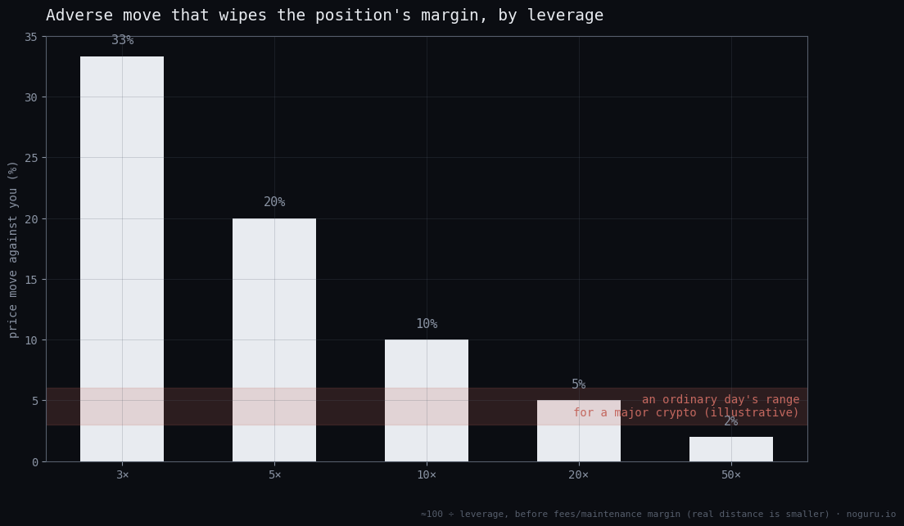

Trading Academy · Module 1 — Why slow wins · Lesson 2/4 · Lesson 2 of 22 in the curriculum · ~6 min read
Leverage, liquidation, and an ordinary Tuesday
At 20× leverage, the market does not need a crash to take everything you put up — a 5% move against you, the kind major coins make on a slow news day, is 100% of your margin. The distance to liquidation is one division: roughly 100 ÷ leverage.
Find something on this page
Read this lesson in context
This is the original free lesson. Its hypothetical examples teach general trading concepts. References to futures, stops, other strategies or older track-record formats are not statements of NoGuru’s current spot configuration.
Public reading
5% an ordinary day's move for a major crypto — and, at 20× leverage, enough to wipe the position's entire margin. No news required.
Two words first. Leverage means trading with borrowed exposure: at 10×, you put up $1,000 of your own money — the margin — and control a $10,000 position (all figures here hypothetical). Gains and losses are computed on that hypothetical $10,000, but your cushion is only the $1,000. Liquidation is the exchange force-closing that position when the loss has eaten the cushion. It is not a warning — the margin is simply gone.
How far does price have to move against you before that happens? Approximately 100 ÷ leverage, in percent:
| Leverage | Move that wipes the margin | In crypto terms, roughly… |
|---|---|---|
| 3× | ≈ 33% | a genuine bear leg, weeks or months in the making |
| 5× | ≈ 20% | a sharp correction — a bad week or two |
| 10× | ≈ 10% | a strongly red day; several arrive every quarter |
| 20× | ≈ 5% | an ordinary Tuesday — no news required |
| 50× | ≈ 2% | an hour of routine chop |
Simplified: the true distance is slightly shorter because of maintenance margin — the full lesson computes it. The right-hand column is illustrative of commonly observed magnitudes, not a statistic.

Hold the last two rows against the previous lesson's recovery curve: liquidation is a 100% loss of that margin, and 100% losses live on the vertical wall. This is why the signals published on this site use 3× and 5× on isolated margin, and nothing higher — at those levels, only a move that takes weeks can reach the margin, and every published signal carries a stop-loss far inside that distance.
The full lesson computes the true liquidation distance including maintenance margin, works through why "I'll close it before it gets there" fails in practice (gaps, cascades, and the fact that you sleep), compares what liquidation does under isolated versus cross margin, explains what leverage is actually for , and ends with an exercise: computing the liquidation distance of a position you were tempted by.
← The arithmetic of losses Expectancy: why win rate isn't the score →
Original source risk note
Trading cryptocurrencies involves substantial risk of loss and is not suitable for every investor. The academy teaches method and arithmetic — it does not and cannot promise trading results. Nothing here is investment advice.